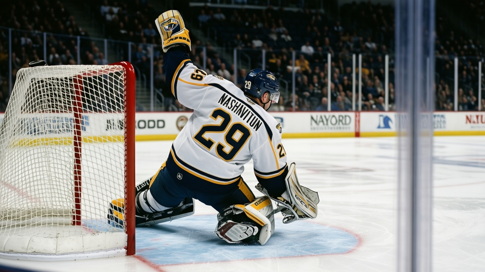
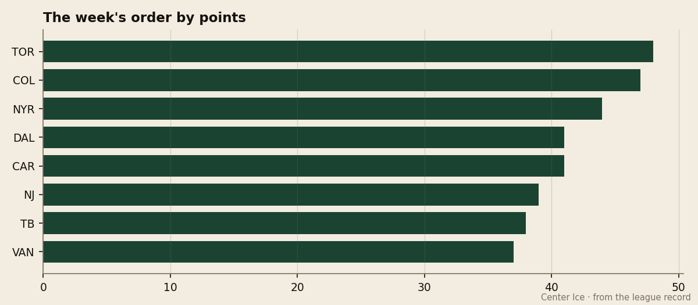

The Blaine Rankings, Week 4: the fourth team in the West is Nashville, and nobody noticed
A five-game win streak, 10-7 on the road, and the cheapest point in the group behind Colorado and Toronto
 Howard BlaineSenior writer, The Blaine Rankings · The Hockey Gazette
Howard BlaineSenior writer, The Blaine Rankings · The Hockey Gazette
The field that was supposed to be gone in December is not gone, and the proof is in the one club nobody has named all season.  Nashville Predators has 36 points in 28 games, the fourth-most in the West, a five-game win streak, and the best goal balance of any team behind the two at the top. They are the fourth team. Nobody has written about them, which is part of the point.
Nashville Predators has 36 points in 28 games, the fourth-most in the West, a five-game win streak, and the best goal balance of any team behind the two at the top. They are the fourth team. Nobody has written about them, which is part of the point.
The standings at Christmas are not always the standings in April, and this season they are not, because the two clubs everyone watches are so far ahead that the real news is the muddle behind them, where the difference between third and ninth in the West is five points.  Colorado Avalanche sits on 47 in 28 games and
Colorado Avalanche sits on 47 in 28 games and  Dallas Stars on 41 in 30, and then it is a pile:
Dallas Stars on 41 in 30, and then it is a pile:  Vancouver Canucks 37, Nashville 36,
Vancouver Canucks 37, Nashville 36,  Edmonton Oilers 35,
Edmonton Oilers 35,  Detroit Red Wings 32,
Detroit Red Wings 32,  Columbus Blue Jackets 31, the entire race from the home-ice line down to the playoff floor contained in six points. The only team in that pile winning like a contender is the one with the smallest name on it.
Columbus Blue Jackets 31, the entire race from the home-ice line down to the playoff floor contained in six points. The only team in that pile winning like a contender is the one with the smallest name on it.
Nashville's numbers hold up under the kind of reading that finds teams out. They are 13-8-4, outscoring opponents 112-101; they are 10-7 on the road, which is the balance that stopped last season's version of this club in the spring. The five-game streak is the league's second-best active run and the longest in the West by two. The goal stake, 11, is better than every team in that six-point pile except Colorado and Dallas, and it was built without a single 30-goal scorer on the sheet.
| West, the muddle | GP | Pts | GF-GA | Streak |
|---|---|---|---|---|
| Vancouver Canucks | 29 | 37 | 116-103 | L1 |
| Nashville Predators | 28 | 36 | 112-101 | W5 |
| Edmonton Oilers | 29 | 35 | 105-118 | L4 |
| Detroit Red Wings | 28 | 32 | 106-114 | W1 |
| Columbus Blue Jackets | 28 | 31 | 92-92 | W3 |

The economics of this club are the reason the streak is real and not a run of home wins over bad teams. Nashville gets a point for every $1.30M in payroll, the cheapest in the eastern half of the West's contenders and among the five cheapest teams in the entire league; only  Minnesota Wild and Vancouver Canucks, with $1.43M and $0.94M per point, do more with less, and neither Minnesota nor Vancouver is 10-7 on the road while doing it. This is a team that drafted [[Tomas Vokoun|player:1044]] in the eighth round of the 1994 draft, signed him to 23 games of dependable goaltending, and let the money go to the blueline instead. At $46.77M they carry the fourth-smallest payroll in the conference, and they carry the fourth-best record.
Minnesota Wild and Vancouver Canucks, with $1.43M and $0.94M per point, do more with less, and neither Minnesota nor Vancouver is 10-7 on the road while doing it. This is a team that drafted [[Tomas Vokoun|player:1044]] in the eighth round of the 1994 draft, signed him to 23 games of dependable goaltending, and let the money go to the blueline instead. At $46.77M they carry the fourth-smallest payroll in the conference, and they carry the fourth-best record.
Vokoun is the quiet story inside the quiet story. The Bureau's Book has him at 90, his numbers are a 3.02 goals-against average and an .850 save percentage, and he has started 23 of 28 games while the club won five straight. That is not the line of a goalie carrying a team; it is the line of a goalie who does not give a streak back. Nashville outscored opponents 39-30 over its last 10, and Vokoun's 13 wins are tied for sixth in the league. He is 24th overall in the Book, the cheapest quality goaltender in the West, and nobody outside the building has noticed.
Nashville's schedule in the next week is the schedule of a team being tested and not being spared: home against Minnesota Wild on Tuesday, then at  Calgary Flames on Friday, then Vancouver Canucks at home on Sunday. Three of four opponents are in the muddle with them. The road games are the tell, because Nashville's 10-7 away mark is the thing last season's youthful club (they won a round in the spring and went home) had to prove it could hold, and they are holding it.
Calgary Flames on Friday, then Vancouver Canucks at home on Sunday. Three of four opponents are in the muddle with them. The road games are the tell, because Nashville's 10-7 away mark is the thing last season's youthful club (they won a round in the spring and went home) had to prove it could hold, and they are holding it.
The field was dismissed in Week 1, when this column said two clubs had left it. The correction, four weeks in, is that the field did not go anywhere. It is packed and affordable, and the best team in it is the one nobody ranks because the league was not looking at it. Nashville is the fourth team in the West. By April, the standings will say so.